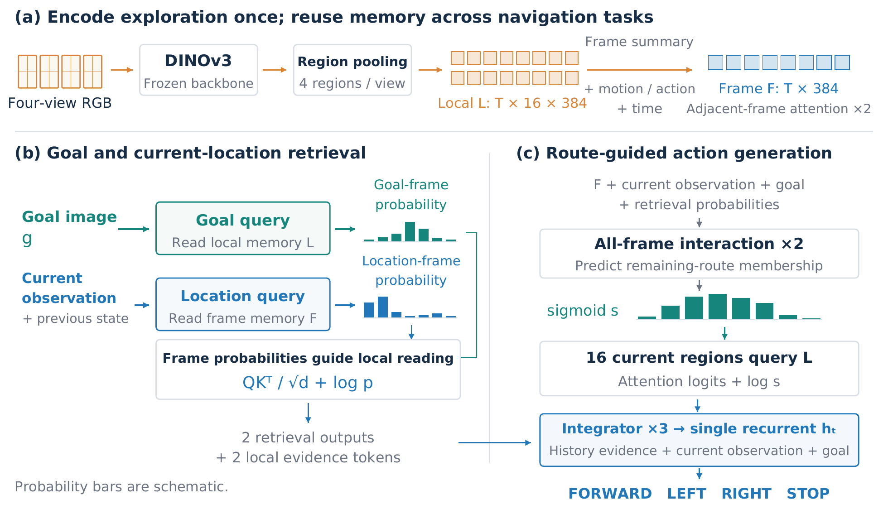

Beyond Retracing: Learning to Navigate from Exploration Memory
Tianjin University
Abstract
We investigate how a single episode of visual exploration can support subsequent navigation tasks with changing starting conditions and goals. We show that a learned policy can navigate from different starting locations to a specified target and, in some tasks, take shortcuts. The model encodes four-view RGB observations, relative motion between consecutive observations, and executed actions into reusable memory. During navigation, it predicts actions directly from the goal image and current observations, without an explicit map or external localization and planning modules. We vary the start, heading, and goal across tasks that share an exploration episode. To train the policy to reuse that experience, we combine spatial supervision, teacher demonstrations, and interactive imitation learning.
Across 1,433 tasks in 37 held-out indoor scenes, the model succeeds in 1,043 (72.78%); after excluding 241 collision terminations, the success rate on valid episodes is 87.50%. Clearing exploration memory or swapping the goal layout stored in it substantially reduces navigation performance. Among 208 tasks with verified shortcut opportunities, the model takes 76 successful shortcuts across 17 buildings. In 31 of these cases, the target never appeared in any navigation view before the manually annotated key step. These results show that visual memory can retain spatial information that shapes subsequent actions, allowing robots to choose new routes in environments they have already explored. Project page: https://artisgeneral.github.io/beyond-retracing/.
Approach
After exploring a building once, can a robot use what it saw to reach a different goal from a new starting point? We give the robot an image of its destination and let it reuse the same exploration memory across tasks. The challenge is to recognize the destination in that memory, find the robot’s current location, and decide which parts of the experience matter for its next move.
From exploration memory to the next action
During exploration, a frozen DINOv3 encoder extracts features from four RGB views at each step. We retain 16 local features per step so the robot can later recognize details such as a number on a sign. A second representation combines those features with the executed action, relative motion, and temporal information to summarize the scene at each point along the route.

At each navigation step, the goal image retrieves local features from past views, while the current views and previous navigation state retrieve matching frame summaries. The policy then predicts which past locations lie on the remaining route. Those probabilities guide a closer read of the stored views. The policy updates its recurrent state and chooses one of four actions: move forward, turn left, turn right, or stop.
Navigation Experiments
Across 208 verified shortcut opportunities, the robot took 76 successful shortcuts. The three rows group them by when the target first came into view and whether it was visible just before the key step. In each replay, the red circle marks that step on the map.
BibTeX
@misc{han2026beyondretracing,
author = {Han, Zhiyang},
title = {Beyond Retracing: Learning to Navigate from Exploration Memory},
year = {2026},
url = {https://artisgeneral.github.io/beyond-retracing/}
}